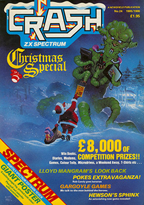
Lloyd Mangram LOOKS BACK At 1985
Taken From CRASH Issue No. 24, Christmas Special 1985/86
In the last Christmas Special 'Look Back', I said 84 was probably the year of CRASH, but as during 85 our sales per month rose from 49,000 to over 100,000 copies, it seems I was happily pessimistic about the year to come. Now it is passed - and what a year it has been!
Last year I was able to spot some trends - the death of the arcade shoot em up, the software slump, the dramatic improvement in software programming and the rise of the TV/Film/Game link up.
During 85 I think it would be fair to say that the arcade shoot em up made a significant come back, the software slump continued with many big and small companies vanishing, software programming techniques continued to improve and the TV/Film/Game tie-ins added books and commercial enterprise endorsements to become the most important aspect in games marketing. I'll be looking at all these trends as they appear month by month, starting with the 84/85 Christmas issue, which was really our January 85 edition.
January
It's becoming a tradition that the year should begin with the end ie Ultimately. Play The Game dashed out with the dual release of Underwurlde and Knight Lore. It was a bit 'controversial' in the sense that the high price tag remained and there were those who said Underwurlde was too similar to Sabrewulf despite the former being turned upright. Knight Lore was a different matter with its spanking new 3D interactive graphics ('filmation') which got around the fact that the game itself wasn't so big.
Fantasy had good pre-sales of their trilogy first part, Backpackers Guide to the Universe partly thanks to early publicity in CRASH, but the review wasn't that hot because, despite very pretty graphics by Stewart Ruecroft and some amusing ideas from Bob Hamilton, the action content seemed to be lacking and the zoo-strategical element wasn't sufficient. However, it looked like a promising start to what would eventually build into a gigantic three part game - but it was never realised. In the February issue we coolly reviewed Drive In and shortly afterwards Fantasy ceased to exist.
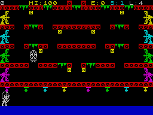
Software Projects had been a bit quiet, but in January had two games on the go, Astronut and Lode Runner, both reasonably well received critically but under-advertised and neither seemed to seriously grab the public's attention. Instead, the Soft Proj ad budget went on their Software Super Savers, latest in the growing line of low-cost games. Despite good sales, budget games were still a bit of a joke (apart from one or two of Firebird's), and with games like Fred's Fan Factory and Moon Lighter among the six released, Software Super Savers didn't seem to be breaking the tradition very much, but at least some of them were quite difficult to play.
Wanted: Monty Mole (CRASH readers' Best Platform Game from 84) had put Gremlin Graphics right on top, but their Spectrum Potty Pigeon was a bit of a disappointment in the New Year, although it was an original re-working of Crowther's already weak CBM64 version. Throughout the year, Gremlin would try to recapture the fresh spirit of Monty without complete success until Peter Harrap's true follow up Monty on the Run.
Not unlike Ultimate, Vortex is another software company whose reputation rests on few and usually good games written by Costa Panayi. Their follow-up to TLL was Cyclone. It employed very similar 3D graphics to the former game with the addition of a slight strategical element, but generally we felt there was no significant advance made and it seemed to lack the lustre of excitement needed to make it a bin game.
ZZAP! 64's hero Rockford made his first appearance on the Spectrum in Boulder Dash, a game I thought absolutely marvellous despite its initially primitive-looking graphics. To play it was to become instantly addicted. It came from State Soft but was marketed by Front Runner, K-Tel's re-named and somewhat short-lived software company.
Two big releases this month were (finally) Atarisoft's Pole Position and Domark's Eureka! Atari had a difficult task to beat the many previous releases all based on their road-racing arcade hit, and in fact they didn't really manage - the game was reasonable but too late. They did try an abortive earlier release at the 84 PCW Show, but criticism was so heavy it was withdrawn for improvements to be made. Eureka!, the multi-part adventure with a £25,000 prize for the first to complete it, was described as a real game despite the hype, but Derek Brewster didn't agree. However he did like the second ever release from Dorcas (formerly Doric), Runes of Zendos, but sadly the distribution network failed to see eye to eye with CRASH and the adventure never received the exposure and sales it deserved - very like Mizar's Out of the Shadows.
Two other games are worth a mention - Steve Davis Snooker from CDS and The Prince from CCS. The snooker game was a typical example of endorsement games, using a well known personality to help sell a product, in this case one of the best ever snooker/pool simulations. The Prince went some way to prove that sponsorship (The Cambridge Awards) can result in good programs.
The only other item of note is that this issue saw the first column from Robin Candy, an enlarged edition of Pokes. Robin was to become a fixture if not exactly a fitting from this point on, and the bane of my life (but that's another story).
February
February saw a few major releases, four from Ocean, still chasing that seemingly elusive CRASH Smash. The worthiest was probably Gift From the Gods, the first game from a new team called Denton Designs, who were all ex-lmagine programmers, partly financed by Ocean and soon to delight with several more games. The best was Match Day, the football simulation to beat them all, and a game many readers felt we dismissed unfairly without it being a Smash. The third was Hunchback II, not perhaps as delightful graphically as Hunchback, but a better game to play and at least it didn't earn the nickname Hunchbug like the first one did. The fourth was another comeback in the form of Kong Strikes Back, an interesting but slightly indifferent game that lacked content but proved fairly tough.
Hewson Consultants came out with Technician Ted and proved that platform games could be tougher and better than Jet Set Willy. The public seemed to like it as well and it made the charts in a big way, upsetting those software houses who had turned the programmers down on the grounds that the game was merely a Willy clone. Firebird proved they could release non-budget games in Buggy Blast and made a move towards reinstating the shoot em up with knobs on. Elite did the same with their next TV tie-in Airwolf and sparked some controversy - CRASH liked the game because it was tough (though not very big), whereas some other mags slated it as absolute rubbish. It did pretty well in the charts though.
But the two biggest releases in the sense of expectancy were Legend's The Great Space Race and Beyond's Doomdark's Revenge. Alas, the former turned out to be the grandest flop in games software history - for once every magazine critic and virtually every reader was in agreement, the box was fine, the contents amazingly poor. Beyond, of course, fared much better and Mike Singleton's follow up to state-of-the-art Lords of Midnight was an even better program (though some readers disagreed). The other big hype release was the Spectrum version of Ghostbusters. This Activision 'mega tie-in' has been claimed as the biggest seller of all time - perhaps however we felt that the great CBM64 sound track covered a lack of real game, and this was more strongly highlighted on the Spectrum with a flat and inadequate rendering of the disco hit song.
On the budget front, Mastertronic came of age with an excellent platform/maze/adventure game called Finders Keepers, upsetting some cherished beliefs (including some of ours) that budget software couldn't crack it, while a relatively new house, Dynavision chased the definitely elusive 'Zaxxon' game with a similar rendition called Havoc - we felt it was pretty poor.
A quiet behind-the-scenes battle for the TV quiz series 'Blockbusters' came into the open when Macsen released a game of the same name, properly licensed, and forced Compusound to change their earlier version to something else. This turned out to be Wender Bender, marketed by Ranks High. They bullied us for some time to re-review Wender Bender on the grounds that they had had a raw deal, having received permission to do 'Blockbusters' in the first place. Eventually we did re-review it, only to find that Ranks High suddenly weren't answering the phone.
Another battle loomed within the pages of CRASH as a result of Derek's dismissive review of Interceptor's adventure Jewels of Babylon. One of the directors of the company rang and became quite insulting on the phone about both the review CRASH and Derek Brewster. Roger Kean, as is his wont, replied stingingly in the following issue.
March
March saw six major games with widely differing appeal. Firebird kicked off with another large game in their 'Gold' range. After some frenzied last minute name changing, it emerged as Gyron, a mega-maze game with a Porsche as a prize to the first completion. Although reviewed in March, readers had to wait some time for its actual release. Shoot em ups hit the vogue in a big way with Moon Cresta from Incentive, the first time this venerable and difficult arcade original had turned up on a home computer.
Micromania hit gold with their maze shoot em up Project Future, but sadly it was to be Micromania's last appearance and within another two months they were gone, owed a fortune by the collapsing distributor Tiger. Mikro-Gen's fortunes however, never looked better with the release of another Wally Week program, the multi-character graphic adventure Everyone's a Wally. The game was reckoned to be good enough not to need the song of the same name by Mike Berry, and if Mikro-Gen had hoped it might make the pop charts they were to be disappointed - however it did for a while become a regular musical catchphrase on the Steve Wright Show on Radio 1.
A company better known for their CBM64 games was Bubble Bus who, with their second ever Spectrum release Wizard's Lair made a Smash. Despite the game's visual similarity to Atic Atac and Sabrewulf, in play it was sufficiently exciting and difficult to earn its own spurs.
For adventurers, Derek thought Spiderman from Adventure International was a worthy hit from the Scott Adams stable. Sadly, the Steve Jackson games promised from Ad Int and reported in the previous issue have never materialised (although they are still being worked on). Another adventure (one from a time previous) well regarded was Castle Blackstar, slightly rewritten from its original marketing, and put out by CDS.
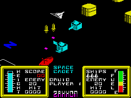
US Gold, riding high with their rash of American Commodore games, were not doing quite so well with the Spectrum conversions. This month saw the release of Blue Max and (finally) the real Zaxxon. Both were disappointing, the latter proving that 'Zaxxon' was still to be done properly on the Spectrum.
Melbourne House offered us an oddity in Hellfire, a three-part game with good graphics but some strange gameplay - it didn't really hit home. Another game that didn't hit (probably because it simply wasn't different enough) was Artic's Mutant Monty, and the lack of advertising to back it up seemed to point up Artic's continuing decline as a software house. Virgin Games was another house in some decline (at least on the Spectrum although Strangeloop for the CBM64 and Sorcery for the Amstrad did very well), but their strategy/simulation based on the evil doings of the pop business and called The Biz was well received. Evil doings were responsible for netting Monty Mole into prison but Gremlin Graphics still hadn't recaptured the right form for their hero in Chris Kerry's Monty is Innocent - it looked as though it required an escape to get things moving again.
Ski Star 2000 was one interesting program we reviewed, one of the first to start using icons to help the player, in this case to redesign the ski slopes. It was from Richard Shepherd - an unusual departure for them. But the news everyone wanted was the password to access the very carefully protected second program on Design Design's 84 hit Dark Star. I was able to 'exclusively' reveal that to see Spectacle you had to type in 'Everyone's a nervous wreck'. I was thrilled - my first ever scoop.
April
April was an interesting month not so much for the volume of software produced, which was actually quite low, but because Ultimate released the well advertised and eagerly awaited Alien 8 - and within days, the letters began to flow. 'It's a rip off', 'Knight Lore in space with no improvements' were typical of some of the comments. But many thought otherwise, the CRASH team included, and decided that Alien 8 was an improvement. Besides which, a fair person might have realised that after spending so long developing the 3D graphics used in Knight Lore, Ultimate was bound to employ them again. In fact within a few months many other software houses were to have a go at similar interactive 3D graphics, proving, if nothing else, that the industry believed Ultimate were right.
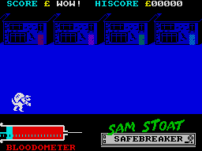
Gremlin Graphics gave us a new hero in Sam Stoat (Safebreaker), related in theory to Monty Mole, but again it didn't quite hit the spot. Mastertronic also dipped a bit with Chiller, a game that had done reasonably well on the 64 but translated poorly to the Spectrum. Ocean's offering was the intriguing Pud Pud, a game that was definitely odd odd.
TV tie-ins continued unabated with the masters Elite and their Dukes of Hazzard and the less often heard of Red Shift and a strategical adventure based on the BBC's Tripods. Dukes of Hazzard seemed typical of Elite's recent games, pretty good graphically but lacking in content. Both Derek Brewster and Angus Ryall slammed Tripods into the ground. Strategy and tie-ins turned out to be a winner, however, for Argus Press Software with the release of their tense adventure based on the movie Alien - the first CRASH Smash from Angus.
US Gold finally struck pay dirt and a Smash with Raid Over Moscow, a game that finally presented a reasonable 'Zaxxon' style screen among others and was successfully hyped by the press as 'controversial' because of its Kremlin-attacking scenario. The 'new look' shoot em up was given a boost by System 3's Death Star Interceptor, which we thought was pretty good, especially the space sequence, but which some other mags regarded as utter rubbish. Romantic Robot, better known for utilities, surprised everyone by releasing Wriggler and getting a CRASH Smash, while Micromega surprised us by releasing A Day in the Life (of Sir Clive) and disappointing us for the first time. Addictive Games had lived successfully off Football Manager for an eternity, so the release of a similar game based on the software business and called Software Star was greeted with some interest, but it failed to live up to the more exciting world of soccer.
One of the other 'majors' Bug-Byte gave us a combo had been quiet for some time, came out with two very different games, Fantastic Voyage and Mighty Magus, but although they were both quite good in their own ways, neither really made much impact and it looked as though another established and major house was in search of the right product. Unlike Melbourne House who released Starion and for a while looked as though they might have beaten Firebird onto the market with an Elite like game. The 3D vector graphics were just about the fastest and smoothest yet seen on the Spectrum, and the addition of historical puzzle games made it quite unique.
May
In fact May was a pretty good month. Hewson Consultants came out with Steve Turner's follow up game Dragontorc of Avalon and it was even better than its forerunner, Avalon. US Gold had two smashes in the arcade conversions of Spy Hunter and the pre-karate rage Bruce Lee. A software house that had been a bit quiet since its Ket Trilogy adventures, was Incentive, but they put that right with the furious puzzle game Confusion - and at long last Ocean made its second CRASH Smash with World Baseball Series although that was under the newly acquired name of Imagine. Even Elite, about whom we had been despairing of a game to match the graphics, came up with a strong product in the endorsed Grand National - the best yet horse racing game and one which boasted excellent equestrian animation. On the adventure front, Derek was pretty thrilled with Level 9's latest graphic and text Emerald Isle. By and large, everyone was so pleased that even Robin Candy went psychedelic in the Playing Tips.
June
A mixed bag this month with some disappointments and one or two pleasant surprises. The one 'dead cert' was Beyond's Shadowfire, the first fully icon-driven graphics adventure. There was a danger that the novelty of the icons might disguise the lack of a game, but Denton Designs did a good job and the game matched its tremendous look, although Dentons themselves admitted to wanting more game elements in the follow up when they got going on it. The other Smashes for the month fell to adventure and strategy with Gremlins from Adventure International, Games Workshop's Runestone, a 'landscaping' adventure to rival Lords of Midnight and Witches Cauldron, an adventure based on Mikro-Gen's famous Wally graphics and reviewed a bit later than it should have been as it proved too difficult for Derek to get through without help! And on the strategy frontline, Angus was pleased with Arnhem from CCS, a company he had always regarded with mixed admiration and amusement for their dogged struggle to convince an uncaring world that war games could be fun. He was also surprised that Lothlorien turned in another worthy strategy game called Overlords. Lothlorien was about to be taken under the expanding wings of Argus Press Software - would it make any difference to their performance?
Legend fought back against the poor publicity generated by the flop of The Great Space Race by providing us with the graphically interesting 3D game Komplex, but despite its programming worthiness and its immense size, it still seemed to lack something in play. A & F were also back with a follow up trying to recapture the enigmatic success of Chuckie Egg with the appropriately named Chuckie Egg 2. In addictive terms it wasn't a patch on the first game, but it did offer numerous platform leaping locations and plenty of adventure elements to keep fans happy for some hours. Another follow up was Falcon Patrol 2 from Virgin Games (although the original had only been on the 64). This was a disappointment, a rather thin game and graphics that didn't look as though they had progressed beyond Durell's much earlier Harrier Attack which the game strongly resembled.
One surprise hit was Tapper from US Gold. The game appeared a month before on the 64 and looked like a difficult one to translate well, but the Spectrum version from Platinum productions was well up to scratch despite the inevitable animation clashes and proved to be one of those hugely and enjoyably frustrating no-win games and one of my personal favourites.
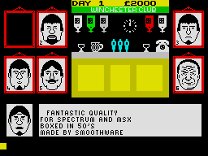
Tie-ins and endorsements were on the increase this month; after much pre-publicity, DK'tronics released Minder their tie-in game, based on the Thames TV series of the same name. CRASH had seen one or two very early versions, and wasn't particularly impressed. A number of points made by Derek Brewster were passed back to the programmer, but in the event the finished game failed to excite us over much. Another tie-in was Give my Regards to Broad Street, a novel travel and search adventure with arcade overtones based on Paul McCartney's musical film, which Argus Press Software brought out under their 'Mind Games' series. As mentioned previously, there was Gremlins, our preview of Frankie Goes to Hollywood, Jonah Barrington's Squash and 911TS. The latter, from Elite seemed to play too heavily on the graphics used in Grand National to be very different and the tie-in with Dunlop Tyres turned out to be more of a marketing element than it first seemed, in as much as the game had originally been developed purely for Dunlop. Dunlop also make sports equipment, possibly even Jonah Barrington's squash balls (I'm no expert!), which featured in the tough simulation by Malcolm Evans of New Generation.
On the budget front Mastertronic released the unpronounceable Nonterraqueous, not a bad big-maze semi-shoot em up, and to underline, as it were, the joke about budget software, Firebird came out with Don't Buy This, a compilation of the worst ever programs that had been sent in over the past few months. Naturally enough, it sold rather well.
July
Into the second half of the year; traditionally the first of the slump summer months. Yet Spectrum software was holding up very well and many more good quality games were being released than during the same months of last year. One which arrived too late to do it justice in a full review was Odin's Nodes of Yesod, so it merely got a Mangram and more of that later...
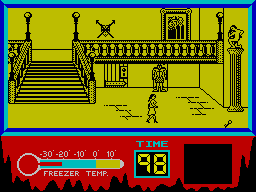
Tie-ins had a veritable field day with the big guns - Rocky Horror Show from CRL and A View To A Kill from Domark. The former, based on the decadent seventies stage show and film did rather well to capture some of the film's feeling, and the graphics were pretty good too, sadly the game just lacked enough content to make it great. Domark's effort (programmed by Softstone, who took over Perfection Software, who produced the early CRASH success Odyssey 1) was far weaker. The three-part game followed some of Bond's exploits from the movie, but the game ideas were thin, Bond looked like a stick insect and all the publicity over how much money Tony Crowther was paid to write the music was wasted on Spectrum owners anyway. Nevertheless, the CRASH review was pretty kind and the game was better on the Spectrum than on the 64.
A third tie-in, however, managed to be even more awful - Super Gran from Tynesoft sent the ageing maternal heroine of Tyne & Tees TV fame hurtling through landscapes of appalling graphics with a control over her actions that only a World War I flying ace would remember. Looking at Super Gran was like looking through a time tunnel and seeing the past - at least graphically it was. Quicksilva also held a mirror up to us in the beautiful looking Glass. It had some fine points but missed one or two in the shoot em up stakes and ended up giving a slight feeling of dissatisfaction on completing it. Mirrors seemed to be in the news when we Smashed Dynamite Dan from Mirrorsoft, one of my favourites (though Robin Candy has never agreed - his tough luck). The graphics lifted this platform game above most others, but some clever innovations, incredibly tough gameplay and jolly music added the spice.
Endorsement of the month award went to Alligata for their Jack Charlton's Match Fishing. Some people reckon fishing is as interesting as watching a river cutting a valley, but the valleys are busy enough with weekend anglers and the sport is among the most popular. Match Fishing boasted an absolutely excellent lakeside scene by David Thorpe and, although the rest of the graphics weren't up to much, the atmosphere it lent carried the rest of this enjoyable simulation along quite happily.
On the Smash side of things apart from Dynamite Dan, there was Herbert's Dummy Run, the enjoyable romp of Master Week through a department store full of Mikro-Gen arcade games, but with a tinge of warning that perhaps the Wally Weekers were getting a touch too similar in style and content; there was Cauldron from Palace, a hit on the 64 that had been really well translated to provide a broomstick 'Defender' and a very hard series of platform games; and surprise of the month was Lothlorien's Battle of the Bulge, their first under the Argus banner, which left Angus Ryan nonplussed with admiration for both Lothlorien and Argus, two companies for whom previously he had had few good things to say. But for many, the big thrill was Gargoyle Games's Dun Darach, starring Grego-celtic hero Cuchulainn in his second graphics adventure. It was a big thrill for then CRASH editor Roger Kean, who got credited on the inlay for inventing the idea of door numbers used in the game. This was one of Robin Candy's personal favourites, and I don't know whether that says more for him or less for the game (but at least he can spell Kookulainn, when I can't).
Two other games in July worthy of note were Archon, a weird mix of chess-like board game and arcade action from Ariolasoft, and Super Pipeline II by Taskset, a company venturing off the 64 onto the Spectrum for the first time. The game suffered in translation with colour clashing characters, but still managed to be addictive and difficult.
August
The August issue of CRASH suffered a bit of a setback when it ran into trouble with EMAP and their Sinclair User magazine - but enough of that...
Somewhat belatedly, Nodes of Yesod got its airing and a CRASH Smash. The graphics action and ideas all contributed to making a great game from Odin (who had previously been Thor). In fact there were some great Smashes in August. Frankie Goes To Hollywood arrived and proved again that Denton Designs could come up not only with an extraordinary mixture of fluent graphics but also with some extraordinary name ideas. They also gave Ocean (proper) a real CRASH Smash. Ocean got yet another through the Imagine label with Hypersports. Not to be outdone Beyond released the two totally hateable Mad Magazine espionage experts, the Black and White spies in Spy vs Spy. Once again, the graphics were excellent, using split screen simultaneous displays for the two players, but it was the humour (taken straight from Mad) that made the game a great one.
Clever graphics were also responsible for the slick presentation of the adventure Smash The Fourth Protocol released by Hutchinsons and programmed by The Electronic pencil Company - a name to be reckoned with in the future. Here, for the first time, Macintosh-like business icons were used to drive the adventure along, and it worked a treat - so did the adventure.
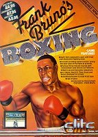
The tendency to 'self copy' was once again rearing its head with all sorts of people about to release karate games, but first came the boxers. Elite produced just about their best ever game in the endorsed Frank Bruno's Boxing. The fluidity of the animation just had the edge over Rocco, a game from Spanish software house Dinamic and marketed here by Gremlin Graphics. Gremlin had won a battle with Silversoft for the rights to this and another game called Profanation, a very tough jump and seek game that was, in theory at least, the third part of a trilogy of which Silversoft ended up with only the first two parts, Saimazoom and Baba Liba. Gremlin Graphics got the best of the bargain.
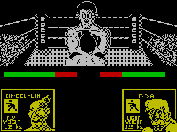
We finally reviewed Artic's latest release Paws, having deemed it sensible to leave it until Artic had made up their minds what to call it. Originally named Cats, after the famous musical, Artic had trouble in obtaining copyright clearance so the name changed but the game didn't, and it was cute but hardly mega-stuff. The Covenant from PSS was much better as was CRL's unusual Juggernaut - the sort of vehicle that gets hung up under the low half-timbered frames of quaint Ludlow town. Biggest disappointment of the month, perhaps even the quarter, was Jet Set Willy II. Software Projects had, of course scored an enormous hit with Jet Set Willy, and there was always rumoured to be a sequel on its way (Jet Set Willy and the Taxman - or something). So news of a second game was good news indeed, except that it turned out to be 40 more rooms added onto the existing game and that was pretty disappointing, especially as programmer Matthew Smith had nothing much to do with it.
September
The last month of this unusually busy summer turned out a handful of goodies. Everyone had been awaiting Costa Panayi's latest 3D developments, and expectations were well rewarded with Highway Encounter from Vortex - a very linear game with extraordinarily attractive graphics and a hero-bot looking not unlike a Dalek. It was voted a CRASH Smash within minutes, and protracted play didn't diminish the delight. Gremlin Graphics, after much pre-warning, launched the proper follow-up to their huge molar hit of last year by Peter Harrap - Monty on the Run followed a similar pattern to its predecessor, but there were more rooms and some of the nastiest little traps yet devised for the unwary platform gamer. It tended to rather over-shadow the other Gremlin release, written by Chris Kerry, Metabolis. I thought this attractive and unusual maze/search game deserved better than it got, and its sense of humour was refreshing.
One game based more on a humorous character than on incipient humour that just arrived in time to be reviewed and Smashed, was Popeye from Dk'Tronics by the venerable author Don Priestly. Not only did the game boast super large graphics, but ones that suffered no attribute problems.
Attractive graphics have characterised 1985, often giving new life to well tried ideas. The usually novel and innovative Design Design turned their hands (or Graham Stafford's hands) to a collect em up maze game with great graphics by Stuart Ruecroft (who had been responsible for the graphics in Backpacker's). Despite the obvious format, On the Run turned out to be likeable, fast and difficult and a Smash.
There were two 'red' releases in September, one an adventure and a Smash from ace writer-explorers Level 9, and one a flight simulator from Database. Red Moon impressed Derek as much for its indication of Level 9's durability as for the game's undoubted qualities of excitement, atmosphere and entertainment value. Red Arrows was another matter however, a disappointment after the drawn out wait for the program's release. It put you in the cockpit of a Red Arrow team jet, flying exhibition formation aerobatics. Unfortunately the simulation turned out slow and somewhat unrealistic.
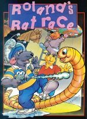
Probably biggest disappointment of the month, though, was Ocean's Roland's Rat Race, a TV tie-in with really very little tied into it. Thinly disguised as a platform/maze game, you had to untangle the knot of passages in search of Roland's kidnapped friends and get to TVAM on time. US Gold also turned out a disappointment in Buck Rogers, although a very good conversion from the 64, it lacked any real spark, not perhaps surprising in such an old arcade game.
However, another, even older game made its appearance on the computer in the form of Cluedo from Leisure Genius - the official version of this ever popular board game. The Spectrum version was rated pretty well, with everyone looking forward to the following release of Monopoly.
If the Red Arrows simulation was a let down, two others this month were not, ASP's Nick Faldo Plays the Open turned out to be the best golf game yet using fashionable icons to make setting up shots as easy as pie and comfortably realistic; while for choo choo fans, Hewson Consultants' Southern Belle gave us the freedom of the engine driver's footplate on an old steam locomotive doing the Brighton run. An unusual area for simulations, and one which led one reviewer to think it easier to control an aeroplane than a train! Southern Belle, however, captivated all those who had ever wanted to grow up and be an engine driver.
That more or less rounded up September except for Domark's release of our very own Derek Brewster's Code Name Mat II, the follow up, not surprisingly to Code Name Mat. We had loved the latter game, with its complex 3D graphics, but the sequel seemed too similar to score heavily, and got hit hard by reviewers for not having 'advanced' with time. The resulting review upset Derek, a man who hardly ever complains unless it's about me, but at least it shut up critics who had made great capital of the fact that all his other games had been CRASH Smashes, and was something funny going on?
October
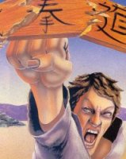
As if to calm everyone down before Christmas, October turned out to be a bit arid with only the Spectrum version of Way of the Exploding Fist from Melbourne House really standing out. Of the long promised spate of self-copy karate games, this was the first to arrive. It converted from the 64 quite successfully, and playing it well meant combining hand and eye co-ordination skills with action in such a way as to offer plenty of enjoyment and mirror the real martial art in as realistic a manner as possible on a computer.
It's true that Ultimate scored with Nightshade, but nevertheless, there was an undertone in the reviewers' comments that they were taking Knight Lore/Alien 8 a bit too far, and that something original was required to revitalise the classic software house image. It also wasn't missed that a company other than Ultimate was credited with the programming...
The only other Smash was Touchstones of Rhiannon, an adapation of the Robin Hood story from Adventure International and based heavily on the recent TV series.
There was a handful of 'solid' games, two from US Gold having been heralded for some time - Dambusters and Bounty Bob, both big hits on the 64, both slightly flawed on the Spectrum. Bounty Bob especially seemed unable to carry its cult status across from machine to machine and resulted merely in a good platform game. Beyond's second label Monolith offered us a rockin' good time with Rockford's Riot, the follow up to very successful Boulder Dash which, while still a fine game, mostly contained the same gameplay elements as its predecessor.
It was left to Derek to discover the two most unusual games of the month in the adventure section, The Rats from book publishers Hodder & Stoughton and The Secret of St Brides by a dubious organisation purporting to be St Brides School for Young Ladies, whose packaging came complete with supporting literature of a slightly off beat British 'gels' school type a la St Trinians (a feeling reinforced by your playing the heroine, Trixie Trinian). The Rats, based on the best seller Herbert book, made a strange combination between adventure of the 'select an option' type and strategy covered in a thick custard of gory horror as the player waded knee-deep through the bloodied remains of rat-gnawed London (reminding me yet again why I left the place)!
Another slightly unusual game turned up from PSS, marketing a French pinball table construction kit under the name of Macadam Bumper (it led to the review compiler being able to use the joke: Language: French machine code - yawn). With this you could play a preset table or redesign it. An excellent offering, but there's still room yet for a really flexible pinball designer program. We also reviewed a program from our old friends at Eclipse aimed at the then-about-to-be-current craze for comet spotting and aptly named Halley's Comet.
But if there were few heavenly bodies to be seen screaming across October's software sky, our forward-looking telescopes were trained on deep space at new games from Gargoyle Games and Hewson Consultants, an extraordinary looking one with the appropriately heavenly body name of Tau Ceti from CRL and one set on the Zoids planet from Martech...
November
Hewson's Astroclone saw veteran 3D progger Steve Turner back in space from his sojourn in the remote past of Maroc and pitted once again against those indefatigable foe the Seiddab in a complex combination of space shoot em up and 3D room exploration game. To some degree Steve and the men from Gargoyle Games seem to have been moving on parallel courses in recent months and Astroclone had uncanny similarities to Gargoyle's release Marsport. This introduced us to a new hero, John Kepler Marsh and the return of Gargoyle to space. Marsport was the first of a planned trilogy of space games called The Siege of Earth, complete with an excellent background story from the pen of Greg Follis about man's meeting with aliens and its consequent results. The subtle additions to the previous Dun Darach together with Gargoyle's inimitable mix of puzzle, pun and action made Marsport a sure fire hit.
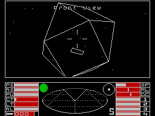
Tau Ceti and Zoids got previewed, but The Edge got Fairlight out for us to rave over. Here was another 3D room exploring game with puzzles to be solved, using graphics that improved upon those employed by Ultimate and one in which objects behaved realistically in interaction with the playing character. Fairlight has been the outstanding achievement of The Edge to date. Turning the page of that issue, another Smash emerged - Elite. Firebird had purchased this cult BBC game for a fabulous sum from the programmers, converted it to the 64, where it was well received, and had spent considerable time making the Spectrum version even better (though alas, not the music)! It's the sort of game (space trader/shoot em up] you either love to death or hate. If the former, then you can't put it down for months.
Bubble Bus also flew us to the deepest regions of space and a black hole with Stephen Crow's follow up to his excellent Wizard's Lair called Starquake. It had visual overtones of Underwurlde and the more recent Nodes of Yesod in its superb graphics and offered a high degree of playability with many neat touches and novel ideas.
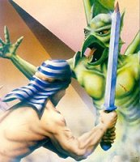
Back on Earth, Melbourne House disappointed us slightly with Fighting Warrior, a sort of ancient Egyptian martial arts program, where it was felt that there wasn't quite enough going on to overcome the fact that much of its content was actually the 'Exploding Fist' control mode.
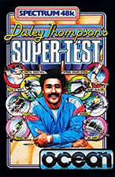
Ocean, too, brought us and our joysticks back to earth with a thump and Daley Thompson's Super Test. Although undeniably fun, Super Test really offered nothing new over Decathlon and was over-shadowed by Hypersports.
US Gold's November game was another monster hit front the 64, Impossible Mission, but like its stable mate Bounty Bob it somehow failed to carry the adulation with it over to the Spectrum, resulting in a respectable enough and tough platform/exploring game.
We also saw the first ever release of a new software name, Electric Dreams, backed by Activision and fronted by ex-Quicksilva boss, Rod Cousens. The game was called Riddler's Den and sparked a bit of a controversy with US Gold, who were also launching a budget label under the same name. Riddler's Den was a good start priming the market for their December release...
December
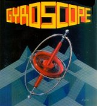
Last month is still fresh in everyone's minds, so l won't dwell too long on its bright points, which were numerous. At last Tau Ceti arrived and Smashed, Sandy White (of Ant Attack fame) gave us Electric Dreams' Smash I, of the Mask. In similar visual vein, Melbourne House came up with Gyroscope and got a Smash. Microsphere surprised us with the quiet release of their skool follow up, Back to Skool and proved you can add even to a fabulous program and get another Smash. Durell got one as well with their Critical Mass, and at long, long last Digital Integration brought out Tomahawk - the game we waited almost 18 months to see. This flight simulator showed some advances over Fighter Pilot and convinced everyone of its Smash merits. Derek enjoyed (and Smashed) the Melbourne House spoof 'adventure' Terrormolinos, although he failed to rate Beyond's Sorderon's Shadow quite as highly as the Mike Singleton Midnight trilogy which it vaguely resembled. On the other hand he gave a Smash to The Secret Diary of Adrian Mole from Mosaic/Level 9.
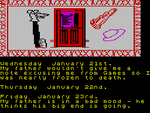
And that just about brings us up to date. So what characterises 1985 as a software year? One thing that stands out to my mind is the way that this summer software kept on coming out, and good software too. 3D has been almost an obsession with many programmers working in all its aspects and proving that last year's 'comprehensive' 3D article is way out of date! Gameplay has been worked on very carefully too, supporting our earlier optimistic view that computer games would not die, only improve and change their nature. But to balance the increasing complexity of games like Dun Darach and Frankie Goes to Hollywood, we've also seen the rebirth of the classic shoot em up - except the graphics have been vastly improved over earlier efforts. Software prices have crept up of course, but budget software has come of age with Mastertronic leading the way, and on the pricier end of the range, we've generally been given much more for our money to make up for it.
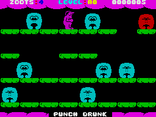
Some software houses have disappeared - or been swallowed up or revamped, Bug-Byte for instance, one of the oldest companies, has just re-emerged as a budget label for Argus Press Software, having been bought out of receivership. Some well known names like Artic and, sadly, Micromega seem to have faded into the background and some companies have dropped out wilfully like the sadly missed Games Workshop, who after toying with some games and producing some excellent material, chose to get out of software altogether. But new names have emerged, often with startlingly strong product.
This year has also seen the growth of professional programming design teams like Denton Designs and The Electronic Pencil Company, who write games but don't market them, leaving that to software houses who buy their talent in. In itself this is a fine idea, leaving the designers to concentrate on doing what they are best at - designing good games. I would say 1985 has been a vintage year for the quality and range of games, and current trends bode well for 1986. Games in the pipeline are promising indeed - we still await Zoids from Martech as I write - and the software business seems content with the results and hopeful of next year.
We wait with bated breath...
LM